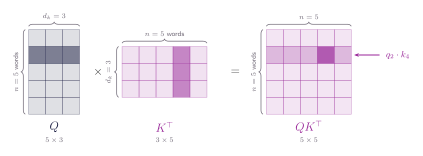
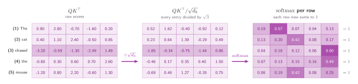
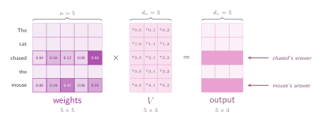

05 · Queries, Keys, and Values
Scaled Dot-Product Attention
A pipeline of three matrix multiplications.
Every query against every key
Let's now see how to stack everything we have talked about so far. Take the queries and lay them out as the rows of a matrix $Q$, then do the same with the keys to get $K$. If our sentence has five words and each one asks its own question, that is five queries and five keys, so there are twenty-five query-key pairs waiting to be scored.
A single matrix product computes all of them at once: $QK^{\top}$ is a five by five table whose entry in row $i$, column $j$ is exactly $q_i \cdot k_j$. Every dot product from the last two sections, done with matrices (guess what, if you hadn't realised it so far, matrices are important after all).

Remember the sentence we started with, the cat chased the mouse. Five words, so five rows in the figure above. Up to now there has been exactly one query, the one we wrote by hand: what did the cat chase? From here, every word carries its own.
So what is a word actually asking? Nothing you could write down as a sentence. A query is a vector, not English, and nobody hands the model a list of questions. It learns whatever directions happen to help. What we can do is describe how a query behaves. Take word (3) chased. It is a verb missing its object, and a query that scores highly against mouse behaves like the question we have been using all along. Our hand-written query was standing in for word 3's the whole time. The difference now is that the other four words get one too.
Concretely, in the figure above:
- Query → a row of $Q$. Row $i$ is the question word $i$ is asking, and there are five of them because there are five words.
- Key → a column of $K^{\top}$, which is the same thing as a row of $K$. Column $j$ is the label word $j$ wears so it can be found.
- Score → an entry of $QK^{\top}$. The entry in row $i$, column $j$ is how well word $i$'s query matches word $j$'s key.
That explains the shading. Counting from zero, as the labels in the figure do, the darker cell on its own is a single score, $q_1 \cdot k_3$: the query of the second word against the key of the fourth, one dot product of the kind we spent the last two sections on. The shaded row it sits in is all five scores for that one query, its match against every word in the sentence including itself. That row is exactly the list of five numbers we ended section 03 with, and every other row of the matrix is the same list for a different word.
Let's now apply what we learned before. Divide the whole matrix by $\sqrt{d_k}$ and apply softmax along each row separately. So every row sums to one on its own. Thus word 2 ends up with its own distribution of attention over the five words, word 3 gets its own, and the matrix as a whole does not sum to anything in particular.

The final matrix is a complete set of weights: five rows, each one a distribution over the five words. But weights are not the final answer. Nothing in that table carries information about the words themselves. It only says how much of each one to use, and supplying the content itself is the job of the values matrix.
The values matrix
So bring in the values! Every word hands over a value vector, just as it hands over a key, and stacking those as rows gives a matrix we shall call $V$ with one row per word. Multiplying the weights by $V$ is the last step, and it is the one that finally produces something worth reading: row $i$ of the result is word $i$'s answer, all five value vectors mixed together in the proportions its own row of weights asks for. That is the soft lookup from section 02, run five times over, once for every word in the sentence.

Let's step back and ask what we are actually doing here. Every row of the weights answers one question: when this word builds its new representation, how much of each other word should it pull in?
So the 0.60 sitting where chased meets mouse is saying that the most of chased's answer is made out of mouse's value. Getting slightly philosophical: what is the influence of mouse on chased? Inside this mechanism it has one exact meaning: it's the fraction of chased's output vector that came from mouse's value. A verb is incomplete without its object, so after this step the representation of chased is no longer chased in the abstract, it is something closer to a "chased a mouse".
The Scaled Dot Attention
Everything from the last three sections now fits on one line:
Read it from the inside out and there is nothing in it we have not already built. $QK^{\top}$ scores every query against every key. Dividing by $\sqrt{d_k}$ keeps those scores in a range the softmax can work with. The softmax turns each row into weights that sum to one. Multiplying by $V$ blends the values in those proportions. Four sections of work, and the whole mechanism is one line long.
There is one thing this formula does not tell us, and it is the question you have probably been holding for a while now. Where the **** $Q$, $K$ and $V$ come from? The catch, they are made from the sentence itself, by three matrices the model learns during training, and that is exactly what the next section is about.